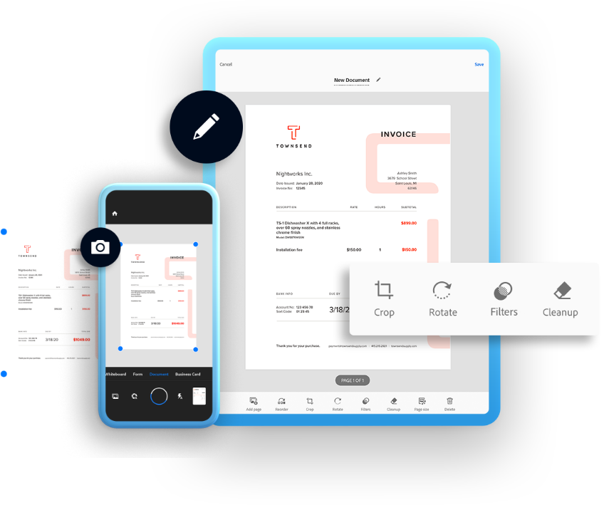
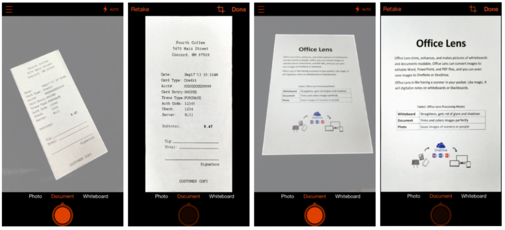

Lapolvasó szoftverek mobil eszközökre
Azok az emberek, akiknek nincs otthoni szkennerük, okostelefonjuk segítségével dokumentumokat szkennelhetnek. Csak egy rendszerre vagy letöltött alkalmazásra van szüksége, hogy a telefon professzionális irodai eszközzé váljon.
Jelentősége az oktatásban
Gyakran tapasztalható az oktatási intézményekben, hogy tanárkollégák-szülők-diákok dokumentumokat, feladatlapokat egyszerűen csak lefotóznak, olykor még homályosan is. Ezek a fotók munkára alkalmatlanok, mert egyrészt perspektivikusan-trapézosan torzultak, másrészt a papír textúrája és akár környezet is látszik. Komoly Photoshop-munkálat ezeket használható formába hozni, és erre még akkor nincs idő egy tanítási folyamatban, ha épp valaki képes is rá, vagyis elvárás, hogy az átküldött feladatlapok azonnal és digitálisan használhatónak legyenek. g
Lapolvasó szoftverek működése
- Szkenneljük be okostelefonunk segítségével a dokumentumot
- A képernyőn megjelenő pontok segítségével, vágjuk le a dokumentum széleit
- Kattintsunk a mentés gombra
- Töltsük le a dokumentumot rögtön vagy pedig az alkalmazáson belüli meghajtónkból
Adobe Scan
A papír alapú dokumentumok digitális változatának létrehozására az egyik legjobb alkalmazás az Adobe Scan. A program elmenti a kész dokumentumot PDF formátumban, és lehetővé teszi a dokumentumokban való keresést és akár tartalom másolását is. Az alkalmazás ingyenes és elérhető Android és iOS rendszereken egyaránt.
Microsoft Office Lens
A Microsoft Office Lens olyan program, amely még nagyobb lehetőségeket kínál, mint az Adobe Scan. Az alkalmazás OCR szövegfelismerési technológiát is használ, de a fájlokat nem csak PDF-ben, hanem Word-dokumentumokba és a Power Point diákba is menti. Az alkalmazás elérhető Android, iOS és Windows rendszeren.
Evernote Scannable
Az Evernote Scannable egy letisztult felületű kis szoftver iOS-re. Segítségével teljes kényelemben tudunk befotózni dokumentumokat. Bár önállóan is megállja a helyét, hiszen a szkennelt anyagokat simán menthetjük PDF vagy JPG formátumba, azért a legjobban akkor járunk, ha az Evernote nevű jegyzet alkalmazást is használni szoktuk, hiszen a kettő remekül kiegészíti egymást (dacára annak, hogy maga az Evernote is képes szkennelésre, vagy névjegykártyák digitális feldolgozására).
.jpg)